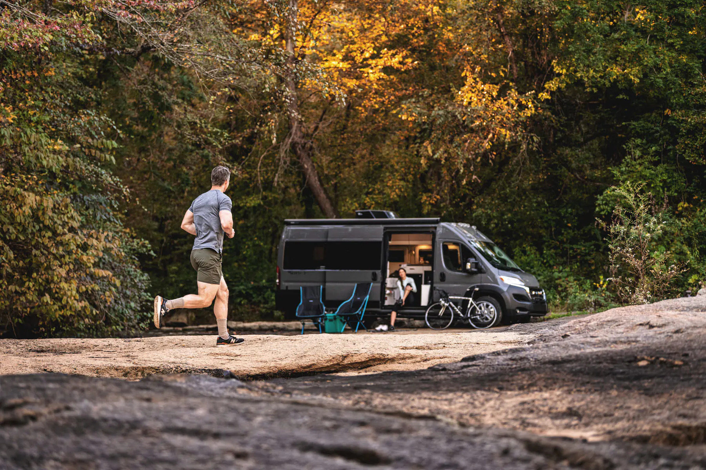
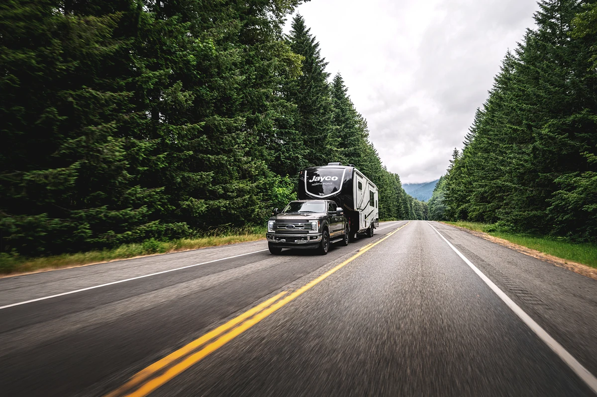

Start here.
Nobody is born knowing what a dry weight is. This is what to work out first, in the order it actually matters — and the numbers behind each answer.
How do you
want to RV?
Before any of the hardware, one question about you. How you travel narrows the lineup faster than any specification will — pick the trip that sounds most like yours and see which classes it points at.
What kind of trips do you have in mind?
Four of the common ones. Pick whichever is closest — most people end up doing a bit of each, and the types overlap accordingly.

Tow it, or drive it?
A towable is a home with no engine; a motorhome is one thing that drives. It changes what you spend, what you can choose from and what your day looks like once you have parked. The guide puts the two side by side on Jayco's own numbers.
Read the GuideUnderstand
the main types.
Not sure where to start? These are the main RV types and what makes each one different.
How much space
do you need?
Sleeping capacity is the fastest filter there is. Pick the number you need and the types that carry it appear alongside.
How many people need a bed?
Count the beds that have to work on a normal trip, not the most the RV could ever take.
What can
you tow?
If you are towing, this is the hard limit — and it is set by the vehicle on your drive, not by the trailer you like.
Slide to your tow rating.
It is on the driver's door jamb, in the owner's manual, or on the manufacturer's site under your exact trim.
Matched on gross vehicle weight rating — the most a trailer may weigh once loaded — rather than on dry weight, which is what it weighs before you put anything in it. Counted across the towable floorplans Jayco publishes a rating for.
Put your own vehicle's rating into the Tow Capability Calculator and it will name every floorplan that comes in under it.
What should you
expect to spend?
Knowing what you’d like to spend can quickly bring the right RVs into focus.
Slide to your budget.
Starting prices, before options. What you actually pay is set by the dealer.
Counted on real starting MSRP — each floorplan's own figure, not its model's base — across the plans Jayco has priced. It badges 20 of the 181 as new without pricing yet, and those are left out rather than estimated.
To total a real configuration rather than a starting figure, use Build & Price.

Find your RV.
Answer the questions above properly — plus what you would tow it with — and the quiz returns a shortlist instead of a lineup.
Take the QuizWhat you
need to know.
Four things worth understanding before the first trip. Everything else you will pick up on the first weekend.
-
Weights, and which one counts
Every RV publishes two numbers. Dry weight is what it weighs empty, before water, gear or people. Gross vehicle weight rating is the most it may weigh once loaded — and that is the one to match against your tow rating. Matching on the dry figure is the single most common mistake in this hobby, and it only shows up the first time you fill the fresh tank.
-
Hitching, and driving something long
A towable needs a hitch rated for it, and a fifth wheel needs a pickup bed as well. Whichever you end up with, it is taller and longer than what you drive now — height matters at petrol station canopies and low bridges, and length matters at every turn. Both get easy quickly; neither is obvious on day one.
-
Three tanks, not one
Fresh water goes in, grey water comes off the sinks and shower, and black is the toilet. Their capacities decide how long you can stay somewhere without hookups, and Jayco publishes all three for every floorplan — they are on each plan's spec sheet in the catalog, worth a look before you commit.
-
Power, and going without hookups
At a site with full hookups an RV runs on shore power and you barely think about it. Away from one you are on battery and whatever you can generate — which is why every Jayco leaves the line either solar-prepped or with a system fitted. If camping off the grid appeals, that is the part to ask about early.
Start Smart.
Travel Far.
Written for people at exactly this stage, by the people who build them and the people who live in them.

Walk through a few.
Half an hour on a lot will tell you more than a week of reading — about height, about bed length, about whether the bathroom is one you would use. It costs nothing and you are not committing to anything.
Find a DealerBeginner
questions.
It is the question to settle first, and it comes down to whether you already have something to pull with and whether you want a car at camp. The Tow vs. Drive Guide puts the two side by side on real figures — price, choice, length and weight — rather than on opinion.
Find its tow rating — owner's manual, driver's door jamb, or the manufacturer's site under your exact trim — and put it into the Tow Capability Calculator. It matches on loaded weight rather than the dry figure, which is the mistake that catches most first-time buyers out.
Usually not, but the thresholds are set per state by weight and sometimes by length, and they differ — so check your own state rather than trusting a general answer, this one included. A dealer will know the local rule for the coach in front of you.
For one trip, almost always — and a weekend in something similar to what you are considering answers questions no specification sheet can, particularly about size. Plenty of owners rented first. It is not a step backwards.
Weights, hitching if you are towing, and how the three tanks work — the RVing 101 section above covers all of it. Everything else is learned by doing, and the dealer walks you through the coach before you take it away.